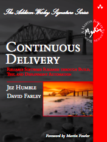
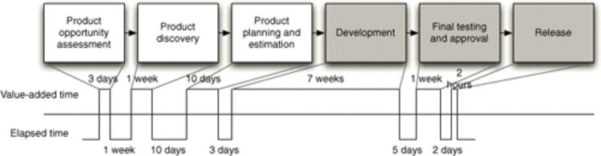
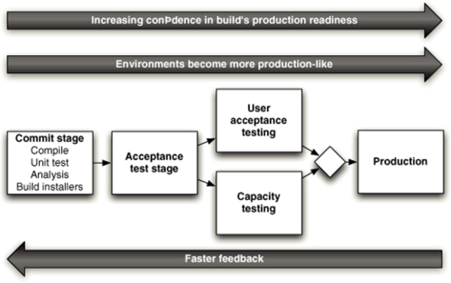
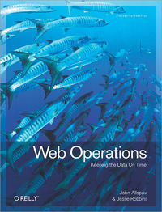

PyCon Ireland
Dublin, 13th Oct. 2012
Software Developer at SumUp
Open-source, Agile, DevOps enthusiast
Pythonista at heart!
Jez Humble & David Farley, 2010
Design and write in small batches Good for the product and developers
Early & Constant Feedback
How long would it take you to deploy a change that involves just one single line of code?
Deliver as fast as possible
Lean Software Development: An
Agile
Toolkit
Mary & Tom Poppendieck, 2003

http://www.informit.com/articles/article.aspx?p=1621865
Cycle time
Waste
Bottlenecks
Stakeholder
Implementation (Dev)
QA
Release (Ops)
Deploying manually
Stagging as first realistic environment
Manual configuration management of production
Design and write and deploy in small batches Good for the product and developers and operations
Software is always in a releasable state
Configuration Management
Agile Testing
Deployment pipeline

http://www.informit.com/articles/article.aspx?p=1621865&seq
Commit
Automated acceptance tests
Manual testing
Release
Quicker feedback on product
Massive risk reduction in Delivery Process
Feature Branches
Component
Deployment
Infrastructure
Testing
Jenkins
Go/Bamboo
Raise your game!
Jez Humble & David Farley, 2010
Jez Humble
http://www.informit.com/articles/article.aspx?p=1621865&seq
John Allspaw & Jesse Robbins
Kitchensoap John Allspaw
Startup Lessons Learned Eric Ries